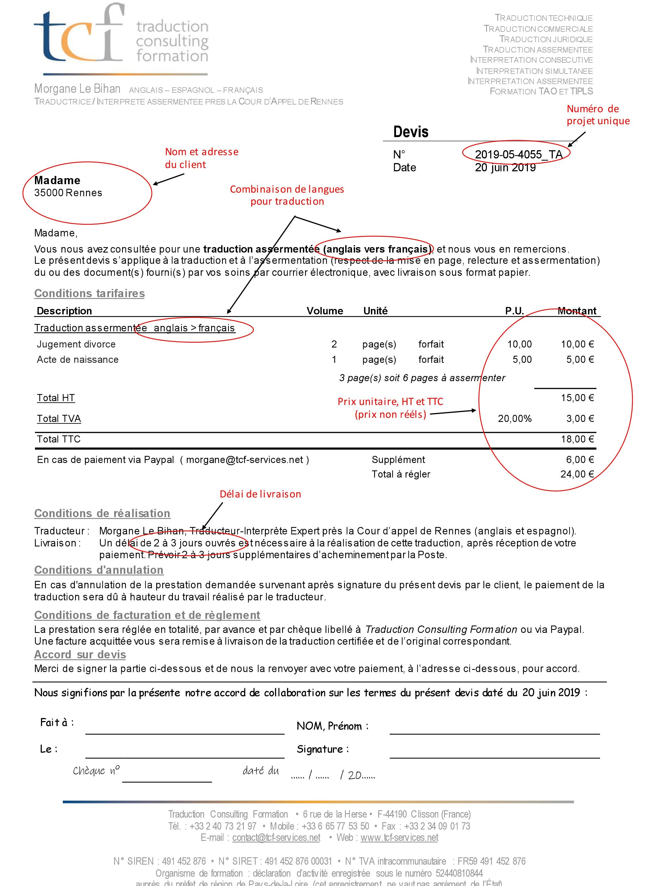

La plupart des semaines commencent chez TCF par la création et l’envoi de devis aux clients, en fonction des demandes qui sont arrivées dans le week-end ou en fin de semaine précédente.
Avec Mme Le Bihan, c’est une routine bien huilée. Il s’agit dans un premier temps d’enregistrer le ou les document(s) dans le bon dossier de son ordinateur, d’attribuer au projet un numéro unique et d’ensuite étudier le document source. En fonction du format de celui-ci, la tâche prend plus ou moins longtemps. Certains clients envoient directement un Word, c’est alors plus facile de déterminer à quel point le document est exploitable pour la traduction et d’obtenir un compte de mots pour le devis. Mais parfois, le format est un PDF ou encore une image, et dans ce cas il est nécessaire de convertir le document, et parfois même de le nettoyer grossièrement pour avoir une image plus claire du travail à effectuer pour le traduire. Là encore, la confidentialité rentre en jeu. Afin de ne pas risquer de publier un document potentiellement privé ou confidentiel, Mme Le Bihan utilise un logiciel de conversion payant pour éviter les sites en ligne mis à dispotion de tous.
À la suite de ces étapes, on ressort une trame de devis déjà effectuée en fonction du type de service, c’est-à-dire une traduction technique ou assermentée. Puis il suffit de remplir le devis propre à chaque client et chaque document, avant de le renvoyer au client. Chaque devis indique : le nom du client, son adresse si elle a été communiquée, le numéro unique au projet, le prix détaillé, la date, le délai à prendre en compte pour la traduction et les conditions de réglements. L'exemple que j'ai inséré ci-dessous est un devis pour une traduction assermentée. Tous les devis pour les demandes de ce registre sont donc basés sur ce modèle.

Le client décide ensuite de signer le devis, ou non. Si tel est le cas, la traduction est effectuée dans les délais indiqués sur le devis. Mais très souvent, le devis n’aboutit pas ou pas dans l’immédiat. Il s’agit donc de perdre le moins de temps possible sur le devis, même si cette étape est obligatoire pour faire tourner l’entreprise. C’est pourquoi Mme Le Bihan possède une routine et est très organisée sur ce point : il faut être efficace et juste sur les devis, être réactive tout en rentabilisant celui-ci. Après avoir observé puis aidé Mme Le Bihan sur cette tâche, j'ai pu créer moi-même des devis selon les demandes. Le tarif appliqué est propre au traducteur qui décide d'un montant plus ou moins cher que la moyenne. C'est faire jouer la concurrence sur un marché ou les offres sont nombreuses. Le nombre de mots, la mise à page, la qualité du document source, le nombre de pages à assermenter, l'éventuelle législation de signature en mairie, le délai imposé, les conditions d'envoi avec La Poste... tants de critères qui rentrent en compte pour fixer un tarif pour que le projet, s'il aboutit, soit rentable tout en essayant de rester raisonnable pour ne pas faire fuir le client potientiel. C'est en tout cas la stratégie qu'a choisie Mme Le Bihan.